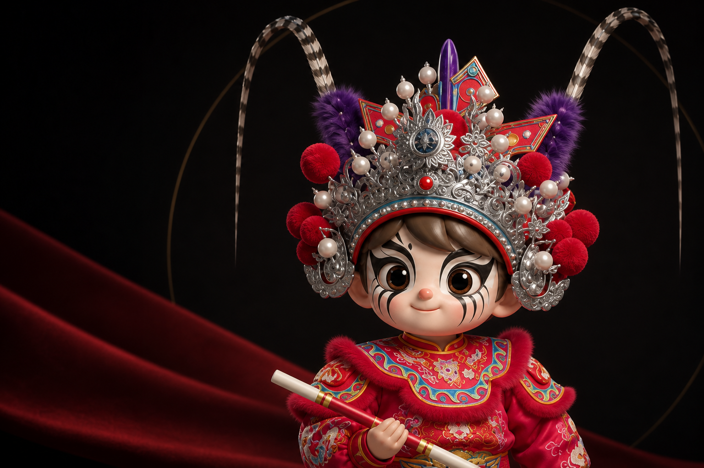
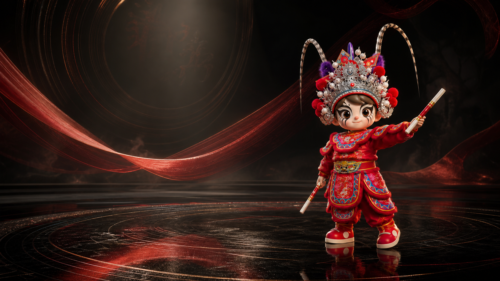
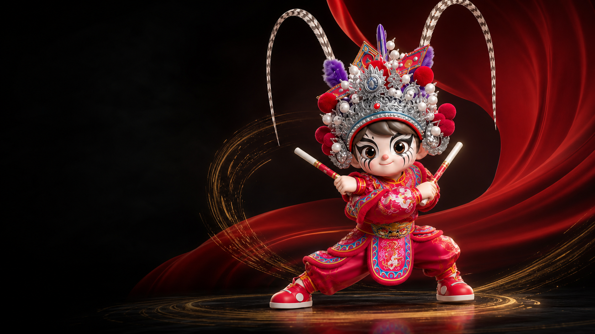
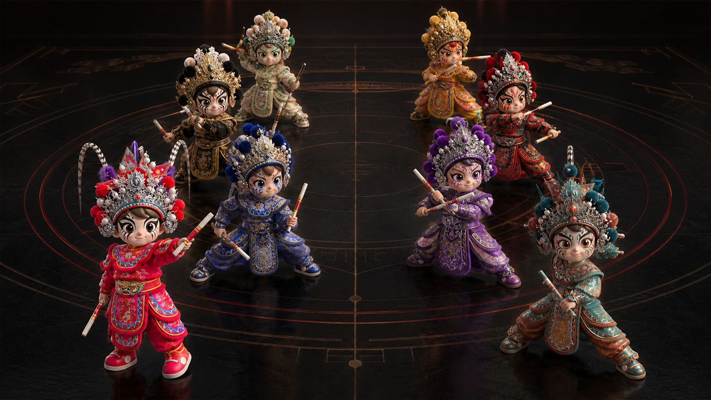
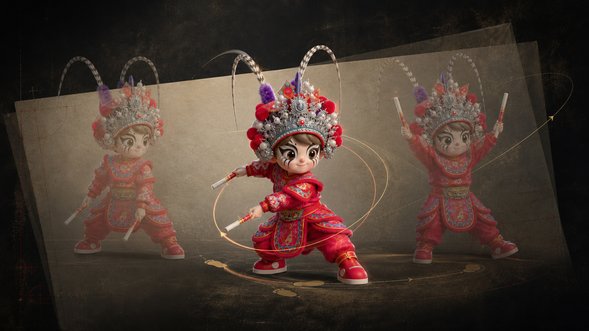

人物先看见
先看见
一个人
脸谱、盔饰、服色与体态共同建立角色识别。IP 形象用于导览，不替代真实队伍中的人物与脸谱考证。
脸谱色块与线条共同形成角色气质
盔饰银饰、绒球与翎尾构成上部轮廓
从人物进入知识，而不是从一段定义开始。

画面为数字化演示，不对应具体队伍槌法。
英歌图鉴

脸谱、盔饰、服色与体态共同建立角色识别。IP 形象用于导览，不替代真实队伍中的人物与脸谱考证。
从人物进入知识，而不是从一段定义开始。
三项数据均来自国家级非遗名录资料

一声槌响，不只是一声响。
02 / 动作解剖
把一记槌拆开看，先看脚底与重心，再看躯干怎样把力量送到手臂，最后看槌端如何减速、收住，并为下一拍留下位置。
这是观察框架，不是所有队伍统一使用的教学口令。
稳定来自站距、朝向与落脚支撑。肩颈如果先耸起，手臂往往会抢在身体之前发力。
看英歌不能只追着前排。退后一步，才能看见开合、转向、穿插和收势怎样共同组织空间。

两列平行、左右对称向前行进，是巡游中最基础的队形。
英歌是什么
“英歌”是国家级非遗采用的正式项目名称。它融合舞蹈、南拳套路与戏曲表演，以持槌群舞、锣鼓节奏和队形变换形成强烈的广场气势。
从普宁、潮阳到潮南、惠来，不同村落与队伍都有自己的板式、脸谱、套路与讲法。看懂英歌，先要尊重这些差异。
三道入口
从声、形、意三个入口理解英歌。点击任一主题，英歌小槌会带你继续深挖。
选择一个入口
跟着节奏深入
声音：锣鼓与槌
形态：武步与阵法
意味：脸谱与乡土
档案事实
图像用于观察关系；名称、事实与适用边界以可核验档案为准。


四套轮廓、四色主调、四种体态，用于本页角色导览；不对应具体历史人物。
第一次看英歌
一场英歌的力量，不只来自快速对槌。锣鼓、领舞、步法、队形与空间共同决定你看到的节奏和气势。
留意起鼓、加速、转段和收势。鼓点不仅伴奏，也在组织全队行动。
头槌、二槌常承担方向、节奏示范或队形启动，但对应人物因队伍而异。
观察屈膝、踏地、转身和移动路线，感受武术步型如何转化为群舞。
对击、翻转和绕槌与步法同步。速度越快，越要看队员之间的距离控制。
街巷、广场和舞台会改变人数、行进方向、队形宽度和完整段落。
从一声鼓到一次变阵
第一组循环确定速度、注意力和入场时点。舞者由此统一起势、落脚与第一次击槌。
声音先行踏地、转身、对槌和移位不是各自完成，而是在稳定周期中彼此校准。
身体同步密度、响度、停顿或约定鼓句提示段落转换，领舞再用方向与位置完成确认。
声觉与视觉协同固定尾句、停鼓或领舞定势让队伍同时结束。段落结束和整场收队需要分开理解。
共同完成“普宁快、潮阳慢”只是便于记忆的粗略印象。真正比较时，还要回到具体队伍、板式、套路、锣鼓和演出场景。
标准地图由自然资源部监制，审图号 GS(2023)2762号；公开图件来源于人民日报。页面保留完整原图与审图号，不重绘行政边界，正式上线前仍应在标准地图服务系统复核最新版本。核对官方标准地图 ↗
地域不是标签，是一组具体队伍与具体实践
国家名录记录多种人数与队形。真正比较要落到南山、泥沟、华市等具体队伍。
文光岭东、西门女子、城南忠精等队伍各有板式、套路和组织历史。
107人结构、武畔文畔、乐器配置和八拍吆喝都有公开记录，但只适用于甲子个案。
神泉英歌等地方传统需要结合项目名录、队伍口述和当代活动记录继续补充。
国家非遗资料常用“前棚、后棚”概括传统结构。现代巡游、舞台和短视频会对它重新剪裁，因此不能把高潮片段当作完整英歌。
点按鼓面，感受由疏至密的节奏。真实队伍的鼓点与口传节奏各有差异，这里只做声画体验，不代替具体队伍谱例。
这是一套交互示意，不是任何队伍的传统鼓谱。真实对应关系必须按具体队伍核实。
角色辨识的第一原则
“头槌、二槌、司鼓”是功能称谓；李逵、关胜、宋江、时迁等是人物身份。两层如何对应，由具体队伍决定。
可靠判断依次参考节目单、队伍说明、固定谱样、历年照片、道具、站位和动作。仅凭“红脸”“黑脸”猜人物，可靠度最低。
历史叙述需要区分地方传说、名录表述与连续文献。这里展示证据层级，不把多种观点压成一条单一起源线。
重要的社区历史表达，不等同于完整连续的文献证明。
水浒叙事、尚武传统、秧歌与傩文化等观点并存。
“英歌（普宁英歌、潮阳英歌）”，项目编号Ⅲ-8。
女子、少儿、校园与海外传播不断拓展英歌的实践边界。
面对“唯一、正宗、最早、固定人数”等说法，先问清它适用于哪个地区、哪支队伍、什么年代，以及证据来自哪里。
不是。国家名录资料记载舞者多为双数，少则12人、多至108人。实际人数还受队伍传统、道路和舞台条件影响。
这是过度简化。潮阳名录资料本身就记载慢板、中板和快板并存，普宁内部也有多种速度与队伍风格。
不能这样判断。英歌脸谱受人物、村落审美、师承和绘脸体系影响，必须结合队伍资料、站位、道具和动作。
不是。权威名录常见“前棚、后棚”的概括；部分材料有其他分段，现代演出也经常压缩或省略后棚。
不同地方可能有自己的发源地叙述。若缺少连续文献、谱系和多方研究，不宜认定唯一答案。
英歌不一定要108人，具体要看队伍和场地。